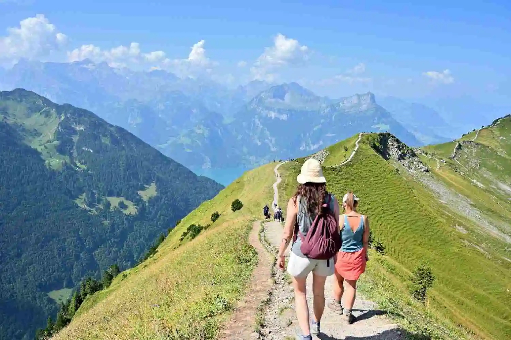

A high-fidelity archive of raw route data, unedited alpine ridge lines, and pristine subterranean channels documented live by our pathfinder squads.





Clear parameters and operational answers regarding your next isolated expedition.
Every itinerary locks in absolute transit path vectors, verified coordinates for isolated basecamps, wilderness route metrics, return flight confirmation windows, and high-fidelity logistics blueprints engineered to bypass standard tourist congestion lines completely.
Our distributed pathfinder network physically tracks, records atmospheric variations, and tests regional resource channels firsthand before publishing any vector mapping data template onto your dashboard terminal.
Yes. By utilizing the operational terminal within your account matrix, parameters can be dynamically altered to change duration variables, transit class levels, and extreme activity inclusions to match your squad's survival metrics.
We provide full gear guides mapped explicitly to your destination terrain (Alpine, Submarine, or Desert Dunes). This includes thermal rating configurations, communication wave thresholds, and pack weight load suggestions.